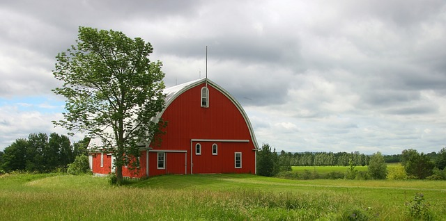

Organic food selectionOrganic food come in all shape and sizes.Below are some example of organiv food |
|
Legumes.Legumes come in many shapes: elongated, flattened, spherical or kidney. Also called kidney beans, black eyed peas, cannelloni beans, lima beans and pinto beans.Legumes and beans are easy to store, inexpensive and a healthy addition to most diets.(Collins, Nicole.) |
 |
Fruits and VegetablesLow in calories but rich in vitamins and antioxidants, vegetables and fruits have been linked with a reduced risk of heart disease, cancer, diabetes and obesity.(Rosenbloom, Cara) |
|
Nuts and SeedNuts and Seeds offer health benefits such as high levels of protein, vitamins and antioxidants (as well as being a good source of healthy fats). Research carried out in the US during 2005 found that roasting peanuts, for example, increases the overall antioxidant content by 22%.(Thomas, Jonathan) |
|
Dairy Products and EggsThe health benefits of dairy products are the result of biologically active components that are present in native milk and also, due to their suitably modulated activities produced through the action of probiotic bacteria, in the fermented or sour milk products(Ebringer, L., M. Ferencík, and J. Krajcovic.) |
|
Organica